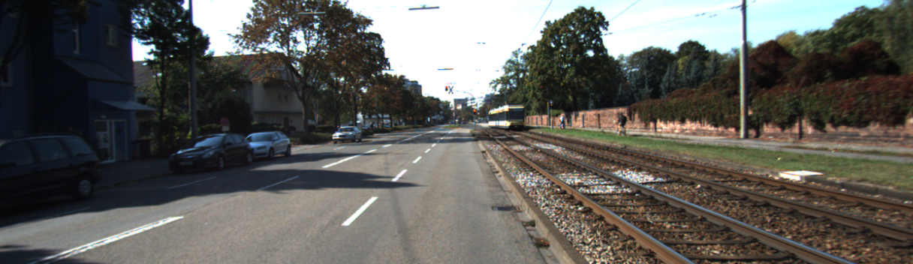

Chọn scene 10 ảnh / cùng checkpoint
Đang nạp trace lossless…D0 → Dfull
Timeline là thứ tự refinement, không wall-clock inference. NODE dùng recorded/dense approximation; readout khác chỉ blend ảnh để trình bày. Click/zoom giữ cùng full-image pixel, không tạo thêm neural calls.
RGB của scene này mở để đối chiếu / chọn pixel

Pixel đang chọn
Inspect geometric jet 3D same selected cell / đồng bộ τ ở trên
Kéo để xoay. Ghost = initial. Height inverse-depth m⁻¹, range cố định theo toàn timeline; gain chỉ phóng đại hiển thị. Mỗi patch là quadratic local trong một native cell, không point cloud; không ép nối mặt qua boundary.
Metric từng stage — full400 validation native grid, pooled GT; không ghép support khác scale
Các số ở đây lấy từ JSON BF16 của completed run. Heatmaps/scene metrics phía trên là replay CPU FP32. Không cộng hoặc trừ RMSE giữa hai scale để suy gain riêng của component; counterfactual khác matched retraining ablation.
Nguyên lý trong một trang
Coarse geometry → fine geometry → metric detail → sensor reliability.
Jet coefficients là local polynomial trong grid coordinates, không vận tốc3D. ODE chạy trong chart z; A = reaction + source + transport không bằng dj/dτ. Không enforce global integrability, PINN/physical laws, convergence hoặc monotone GT improvement.
Điều đã học từ run này
Fine NODE có tác dụng. Native D2 RMSE1.22663→1.20692m; MAE0.34842→0.31815m.
PIR là correction nhỏ. Cùng weights: final0.987965→0.986517m. Không là retraining ablation; tail>10m SSE còn tăng nhẹ.
Bottleneck vẫn là rare tail. 0.1757% pixels>10m đóng57.29%SSE. iRMSE<3.2 đạt; RMSE<0.98 chưa đạt.